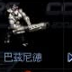

與 Humanoid 相似的人形單位，裝甲稍優，但速度與升級較慢。可使用手榴彈類分散攻擊特殊裝備。
| 名稱 | 說明 |
|---|---|
| UCD 安瓿 | 治療人類型單位 |
| MCD 安瓿 | 治療機械型單位 |
| 懸浮 | 不留腳印 |
| 手榴彈 | 對敵單位造成傷害 |
| EMP手榴彈 | 攻擊敵人能量 |
| 名稱 | 技術等級 | 攻擊力 | 射程 | 射速 | 攻擊模式 |
|---|---|---|---|---|---|
| Light Rifle | 1 | 20 | 12.5m | 0.6s | 地空 |
| Laser Rifle | 11 | 35 | 13.5m | 1.3s | 地空 |
| Plasma Gun | 81 | 112 | 13.5m | 1.5s | 地空 |
| Ultra Plasma Gun | 129 | 148 | 14.6m | 1.5s | 地空 |
資料來源：Ever☆Zone Tistory /107